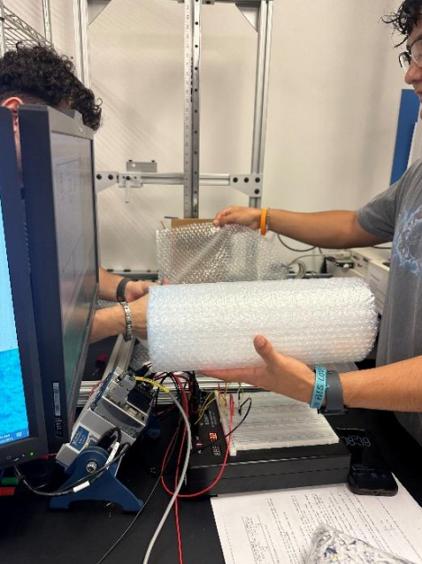
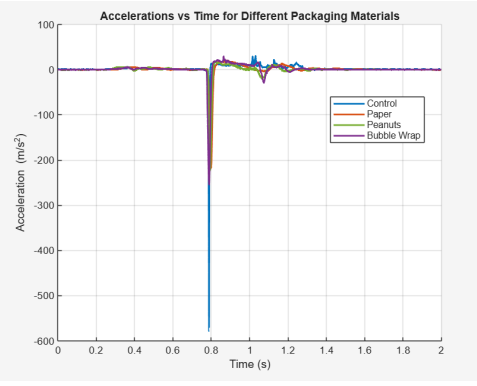
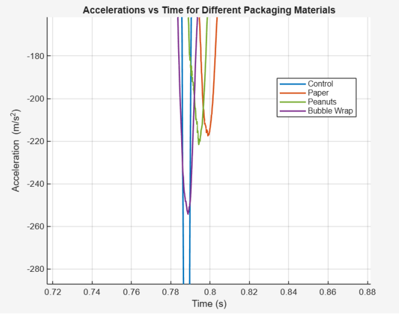
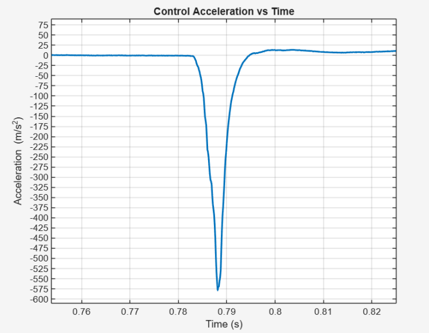
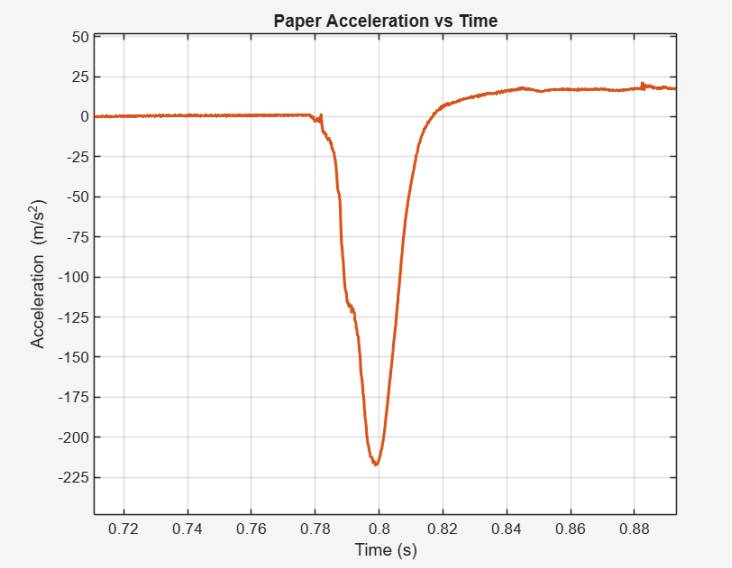

EXPERIMENTAL TESTING
Instrumented Drop Test
Piezoelectric impact sensing, LabVIEW data acquisition, and packaging material comparison.
Overview
This project was completed as part of Electromechanical Systems with two other students. The goal was to compare how different packaging materials affect the impact load experienced by a rigid payload during a controlled drop test.
We modeled a simple shipping problem: if a box is dropped from a fixed height, which packaging material best reduces the shock transmitted to the object inside? To answer that, we instrumented a hockey puck payload with a piezoelectric accelerometer, triggered the measurement with a photodiode, collected data through LabVIEW, and compared acceleration responses for different packaging materials.
Engineering Goal
Build an instrumented drop-test setup and use measured acceleration data to compare the cushioning effectiveness of shredded paper, packing peanuts, and bubble wrap.
Experimental Objective
The experiment focused on peak impact acceleration. A sharper acceleration spike means the payload stops over a shorter time, which creates a larger shock load. A better packaging material should reduce the peak acceleration and spread the impact over a longer time.
We compared four conditions: a control case with no packaging material under the puck, shredded paper, packing peanuts, and bubble wrap. The box size, drop height, payload, and volume of cushioning material were kept consistent so the comparison focused on material behavior rather than geometry changes.
Payload
Hockey puck used as a rigid product analog, with a mass of 170.097 grams.
Drop Height
Box dropped from a fixed height of 0.381 m to keep impact energy consistent.
Test Conditions
Control, shredded paper, packing peanuts, and bubble wrap were tested.
Repeatability
Each condition was tested over multiple trials to reduce random uncertainty.
Instrumentation & Test Setup
The measurement system used a piezoelectric accelerometer mounted to the hockey puck. This type of sensor was a good fit because the impact event was short, fast, and high acceleration. The sensor converted the impact acceleration into a voltage signal that could be captured through the DAQ system.
A photodiode was used as the trigger so the data acquisition system recorded the impact event at the right time. LabVIEW collected the signal at a 10 kHz sampling rate, which was fast enough to capture the sharp acceleration spike during impact.

Drop-test setup used to compare packaging materials under the same box size, payload, and drop height.
Data Processing
The raw piezoelectric accelerometer signal was recorded as voltage, so the data had to be converted into acceleration before comparing packaging materials. First, a baseline voltage was calculated from the zero-input signal and subtracted from the measurements to remove sensor bias.
After baseline correction, the voltage signal was converted to acceleration using the accelerometer sensitivity of 1.02 mV/(m/s²). This gave an acceleration time history for each drop. From there, the main comparison was based on peak acceleration and pulse width.
Voltage-to-Acceleration Conversion
The acceleration signal was computed by subtracting the baseline voltage from the measured voltage, scaling by 1000 to convert volts to millivolts, and dividing by the accelerometer sensitivity.
Baseline Correction
Removed the zero-input voltage offset so the impact acceleration was measured relative to the sensor baseline.
Sensor Scaling
Converted corrected voltage to acceleration using the piezoelectric accelerometer sensitivity.
Peak Detection
Compared the deepest acceleration spike for each packaging condition.
Pulse Shape
Used pulse width to understand how each material spread the impact over time.
Acceleration Results
The full acceleration plot showed that each drop created a sharp negative acceleration spike near the impact event. The control case had the deepest and narrowest spike, meaning the puck experienced the largest peak deceleration over the shortest stopping time.
Adding packaging material reduced the magnitude of the spike and broadened the impact pulse. This showed that the cushioning materials brought the puck to rest more gradually, reducing the peak shock transmitted to the payload.

Full acceleration time histories for the control case and packaging material cases.

Zoomed impact region showing the change in peak acceleration and pulse width across packaging materials.
Material Comparison
The control case produced the most severe impact, with a peak acceleration around -580 m/s². Shredded paper produced the lowest peak acceleration, around -220 m/s², and had a broader pulse shape, which means the impact was spread over a longer time.
Bubble wrap reduced the peak acceleration compared to the control, but not as much as shredded paper. Packing peanuts also reduced the impact, but stayed closer to the control case than the other packaging materials. In our setup, shredded paper provided the gentlest deceleration and the lowest peak force on the puck.

Control drop response showing the deepest and narrowest acceleration spike.

Shredded paper response showing a lower peak acceleration and broader impact pulse.
Key Result
Shredded paper provided the greatest reduction in peak acceleration, reducing the impact from roughly -580 m/s² in the control case to about -220 m/s².
What I Worked On
- Worked with a three-person team to design and run the instrumented drop-test experiment.
- Designed and assembled the circuitry needed for sensor integration.
- Integrated the piezoelectric accelerometer and photodiode trigger with the DAQ system.
- Configured LabVIEW data acquisition for high-rate impact measurement.
- Helped run controlled drop tests for the control, shredded paper, packing peanuts, and bubble wrap conditions.
- Processed voltage data into acceleration time histories using baseline correction and sensor sensitivity.
- Compared peak acceleration and pulse shape to determine which packaging material reduced impact severity the most.
Technical Highlights
- Used a piezoelectric accelerometer to capture short-duration, high-g impact events.
- Used a photodiode trigger to synchronize data collection with the drop event.
- Collected impact data through LabVIEW at a 10 kHz sampling rate.
- Converted raw voltage data into acceleration using sensor sensitivity and baseline correction.
- Compared multiple packaging materials under the same drop height, box size, and payload configuration.
- Showed that shredded paper reduced peak acceleration the most in the tested setup.
Tools Used
LabVIEW, DAQ system, NI-9215, piezoelectric accelerometer, photodiode trigger, breadboarding, circuitry, signal processing, drop testing, impact measurement, experimental data analysis
Engineering Takeaways
This project helped me understand how much care goes into experimental measurement. The sensor, circuit, trigger, sampling rate, baseline correction, and data conversion all affected whether the final acceleration plots were meaningful.
The biggest takeaway was learning how to connect instrumentation to a real design question. The experiment was not just about collecting a signal. It was about using that signal to compare materials, understand impact severity, and make an engineering conclusion from measured data.